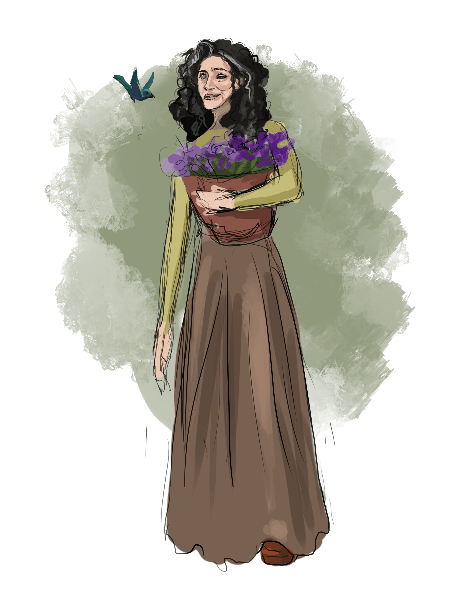

she/her
Botanist; Florist; Royal Floral Arranger
7
44 (TODO Hitdice)
30.
6
5
17
13
13
10
TODO Saving Throws
Nature; Survival; Perception; Investigation
TODO
TODO Damage Immunities
TODO Condition Immunities
TODO Senses
Human elvish halfling ,
Beautiful ,
Barkskin | Spiderclimb | Call Lightning | Spells - 0 - 3; 1 - 4; 2 - 3; 3 - 2. | Wild Shape
Moss will often take <i>wild shape</i> to avoid combat by fleeing into the woods. When cornered, she is a fierce and prolific combatant.
Cudgel
TEST
A face peers up from behind a basket of flowers being watered. "I see the hoodlum convention is in town again," the woman says from one side of her mouth.
Paralysed on her left side, Moss walks by lifting one graceful, strong leg, then stamping and clobbering the floor with her rigid half. Her face is half frown, lips curled down, and half expressive. White stripes streak her roiling black curled hair.
"Woman's oldest profession, next to seamstress..."; "Men are nuts"; "Take in, dearie, take in."
A facial tick causes Moss to wince, the right side of her face folded into ridges, while the left side of her face remains unmoved in its permanent sadness.
Moss leads a simple life, finding pleasure in tending gardens and arranging bouquets. She is meticulously clean, believing that to scrub is to be free.
Moss loves flowers, especially perennials (rododendrons are among her favourites; she also grows numerous ferns at the royal gardens, and eats the fiddleheads in spring); and chamber music.
Whispering to an Amyrillis that "the current war will end soon", a young Moss heard a quiet voice in her head.
You have the gift, child.
Moss was suddenly struck with a channel of supernatural energy from beyond. Her mind was filled with visions of nature while her body was struck with unfortunate disabilities. At this point, when the Goddess of Blooms, without location but existing within every seed and petal, touched her, Moss became aware that she was destined for more than a life arranging flowers for others.
Moss' real name is lost in time. Raised in a testosterone fueled environment with 3 brothers and a long-passed mother, Moss was beleaguered with pseudo-abuse directed towards her womanhood. She absorbed these in her youth, thinking it was normal, but after touched buy the Goddess of Blooms she realized the horrors of which men are capable. In this moment another insight was whispered directly into the center of her mind.
Men are but the seeds. Save the soils, milady. Bless the petals. Love the stems. Revere the roots. But we will always be able to produce more seeds.